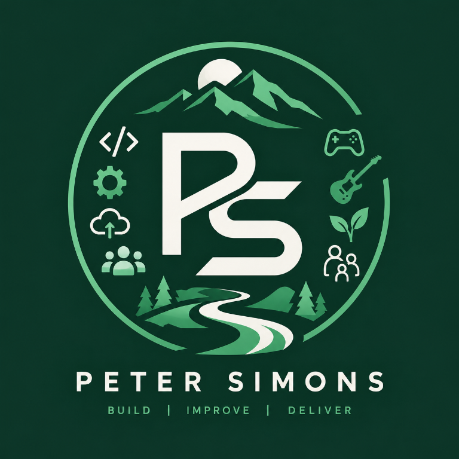

Curriculum Vitae
Peter Simons
Technical Engineering Manager | Product Engineering

Technical engineering leader with experience spanning software development, quality engineering, product ownership and engineering management. I combine hands-on technical knowledge with the ability to set direction, make architectural decisions and help teams turn ideas into working products. My experience includes establishing engineering standards across 14 teams, delivering healthcare software through complex assurance requirements, and leading rapid product development. I remain technically involved where it helps the team deliver, with a particular interest in using AI-assisted development to improve engineering throughput without compromising quality.
Core strengths
Technical leadership
Architecture, technical reviews, engineering standards, mentoring and sound decision-making.
End-to-end delivery
Turning early ideas into prioritised backlogs, working software and products that respond to customer feedback.
Engineering effectiveness
Improving quality, automation and delivery workflows, including practical adoption of AI coding assistants.
Professional experience
Engineering Manager
Enlivio Health | MDT Application
Led rapid-delivery projects following the successful establishment of testing processes for EMIS-X GP. This work evolved into the MDT application, built with fewer of the traditional organisational hand-offs that can slow product development.
- I lead a team of three permanent engineers and five contractors, combining engineering management with backlog ownership, solution design, active development, and code reviews.
- Through personally developed planning strategies converted an initial set of ideas into actionable prioritised and phased backlogs, working with the team to refine requirements, make technical decisions and deliver iteratively.
- Make architectural decisions collaboratively with engineers, taking responsibility for the technical direction while maintaining shared ownership within the team.
- Helped the team adopt multi-agent AI coding workflows, doubling development output without compromising quality.
- I have supported the product from the initial Product management case sign off, through development towards its planned December 2026 market launch. From narrowing the scope of the MVP, defining features, and translating them into a backlog, making strategic architectural and technical decisions to guide the development process. Down to the day-to-day feature development.
- I established delivery practices that allow the team to make progress independently, with clear direction and shared understanding of the product vision.
Head of Testing
Enlivio Health | EMIS-X GP
Responsible for defining and implementing a test strategy across 14 engineering teams developing EMIS-X GP, establishing consistent automated testing and non-functional testing practices across the programme.
- Reviewed the existing application and service repositories, identified gaps in testing practices and developed a strategy with input from Clinical Safety, Technical Directors, Product, Security and Engineering.
- Designed and built a shared C# API automation framework, then supported engineering teams in adopting the framework and migrating their service test suites.
- Standardised automated test reporting across unit, API and Playwright UI suites, improving consistency of evidence for release management, audit and clinical assurance.
- Created a non-functional testing strategy covering accessibility and performance. Selected axe and integrated accessibility checks into the existing UI suite; selected k6 and helped teams learn and adopt performance testing.
- Helped establish reusable pipeline templates and consistent reporting practices, reducing the need for each team to solve the same engineering problems independently.
- Supported the NHS assurance process, with testing processes signed off and EMIS-X GP achieving TIF certification.
Staff Automation / Quality Engineering (Technical Test Lead)
N-able
- Provided technical guidance and coaching to engineers and testers across the department, helping teams improve their automation capabilities and adopt collaborative practices.
- Built and maintained API automation in C# using NUnit and Refit, UI automation using Playwright and TypeScript, and Postman collections for API testing.
- Developed a k6 performance-testing proof of concept and established the foundation for migrating an existing core team's load-testing suite from JMeter, implementing scripts for around a dozen API endpoints.
- Worked with developers to establish UI test harnesses and test-data approaches, addressing practical barriers to reliable automation.
- Continued contributing to backend features, solution design and release test planning while delivering BDD training and supporting engineering teams.
Senior Software Developer
N-able | Device Management for Apple
- Developed and maintained an event-driven ASP.NET microservice hosted on AWS, delivering backend features for an Apple device management product.
- Built, maintained and repaired CI/CD pipelines, supporting deployments through Azure DevOps to AWS using Docker and Kubernetes-based infrastructure.
- Contributed to solution design, backlog refinement, pull request reviews and UI automation, working across development and quality engineering.
- Worked with established code patterns and automated unit testing to support maintainability as the service grew.
Product Owner
SolarWinds MSP / N-able | Device Management for Apple
- Managed the product backlog, facilitated daily refinement and Programme Increment planning, and reported delivery progress to the wider business.
- Worked with engineers to translate business requirements into deliverable work and maintain alignment between product priorities and engineering execution.
- Continued developing backend features, maintaining delivery pipelines and coaching testers in UI automation while investigating escalated customer issues.
Senior Test Engineer & Scrum Master
SolarWinds MSP
- Built a mobile UI automation framework and test suite from scratch, replacing the existing Calabash approach with Xamarin.UITest.
- Combined manual testing, automated testing and backend development, including ASP.NET work and unit tests when testing demand allowed.
- Served as BDD Champion for UK Engineering, delivering training across the organisation and facilitating workshops to help Scrum teams adopt more collaborative practices.
- Created and delivered a half-day workshop for engineers and stakeholders on the benefits of integrated working practices.
- Served as Scrum Master for the mobile team from May 2018, improving refinement, communication and the way the team planned and delivered work.
Technical skills
Development & architecture
C#, .NET, ASP.NET, REST APIs, event-driven services, MediatR, Entity Framework, FluentValidation, Refit, microservices and solution design.
Quality engineering
API automation, Playwright, Selenium, Xamarin.UITest, NUnit, xUnit, FluentAssertions, Verify, axe, k6, JMeter, Postman and Allure.
Platforms & delivery
AWS, Docker, Kubernetes, GitHub Actions, Azure DevOps, CI/CD, MySQL, Git, technical coaching, mentoring, backlog refinement and PI planning.
Additional experience
BDD training and workshops, engineering coaching, technical presentations at testing and agile meetups, and cross-team adoption of collaborative engineering practices.